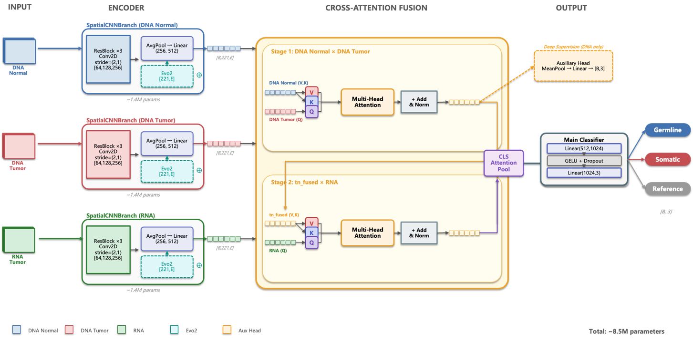
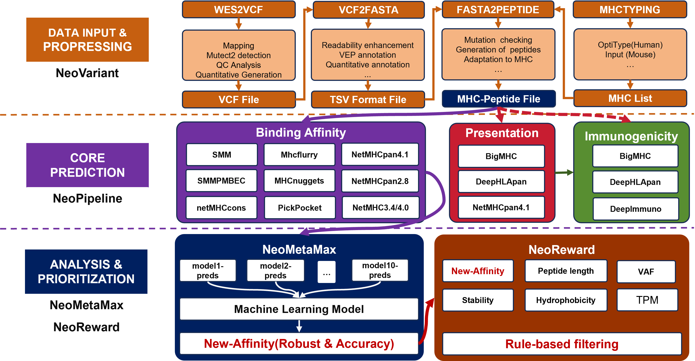
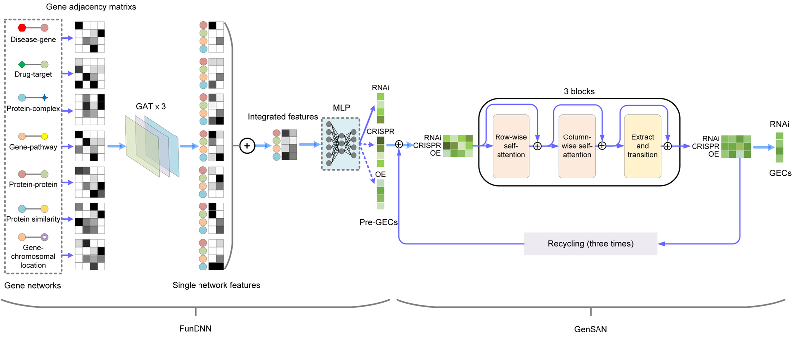

Master's Degree
Algorithm Engineer at the Hangzhou Institute of Medicine, Chinese Academy of Sciences. Graduated from Shanxi Agricultural University with a major in Bioinformatics, where the research focused on predicting transcriptional effects induced by gene or drug perturbations. Current work primarily involves building a tumor vaccine discovery pipeline and developing NGS variant detection algorithms.

A deep network that fuses "spatial visual features" with "biological semantic information." Conv2D layers extract local features from Pileup Tensors, while the DNA-RNA Cross-Attention mechanism enables two-stage attention interaction. The model incorporates the Evo2 genomic foundation model from Stanford, endowing it with "evolutionary intuition" to understand genomic context grammar within a 221 bp window.

A lightweight, highly available, end-to-end neoantigen prediction pipeline. Following the workflow of "data input — variant identification — neoantigen prediction — hierarchical rule-based filtering," it takes common sequencing data as input and outputs candidate epitopes suitable for vaccine design. With a modular architecture, additional processing modules or evaluation frameworks can be easily integrated in the future.

A deep learning model designed to systematically predict, on a genome-wide scale, the transcriptional consequences induced by different gene perturbations. It leverages transcriptional profiling data from the L1000 project—covering thousands of genes across three perturbation types (RNAi, CRISPR, and overexpression)—and is trained in conjunction with multi-layered functional gene networks.